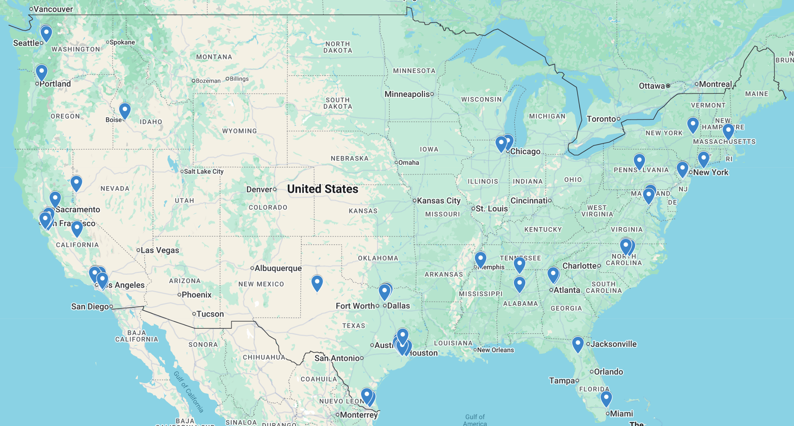

The 2nd edition of Texas Science Bowl took place on January 18th, 2026. The tournament expanded to host 62 teams across 54 schools and 17 states.

Through 14 rounds of competition, including a repeat round for the Final, one team emerged victorious.
Congratulations to Ward Melville High School!
The top teams were recognized and rewarded with $1200 in prize money at the conclusion of the tournament.
The full competition bracket can be found here.
The individual statistics for all participating players can be found here.
Credits
President
Warith Rahman
The University of Texas at Austin Involvement
Ravi Adluru
Taha Asghar-Ali
Param Bajaj
Nathaniel Barnett
Rupak Bhattacharya
Thai Bui
Calvin Chiu
Shreyas Ekanathan
Kason Gu
Swayam Gupta
James Herget
Aayush Ishware
Aravind Karthigeyan
Andrew Kim
Sasi Kondru
Aidan Lai
Sam Lin
Cameron Luo
Edward Mei
Jason Nguyen
Pratham Patel
Andy Teng
Michael Xiang
Anthony Yang
Ashley Yang
Jonathan Yang
Adam Zhu
External Writers and Playtesters
Aldric Benalan
Nihar Bhave
Aryan Bora
Edwin He
Varyan Jain
Emily Kaw
Carolina Kusumanegara
Gabe Levin
Benjamin Lin
Vishal Surya
Ziang Zhuang
Additional Moderators
Ryan Eto
Hansen Jin
Owen Jiang
Richard Kao
Mahdi Khan
Daniel Lu
Jianyu Wang
Katherine Wang
Thomas Wu
Anthony Xu
Luyao Yang
Brian Zhang